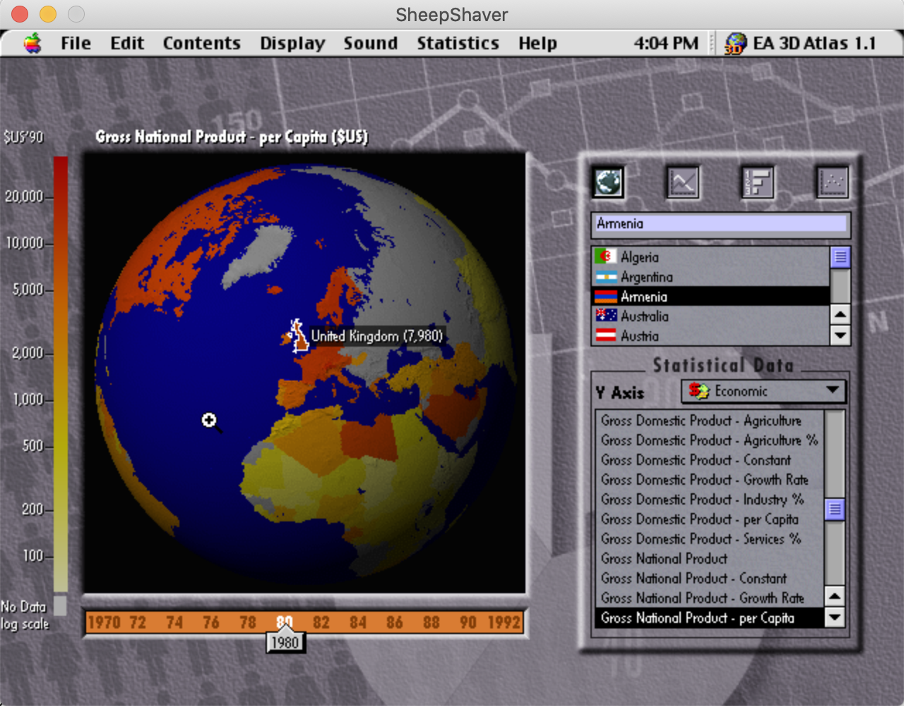
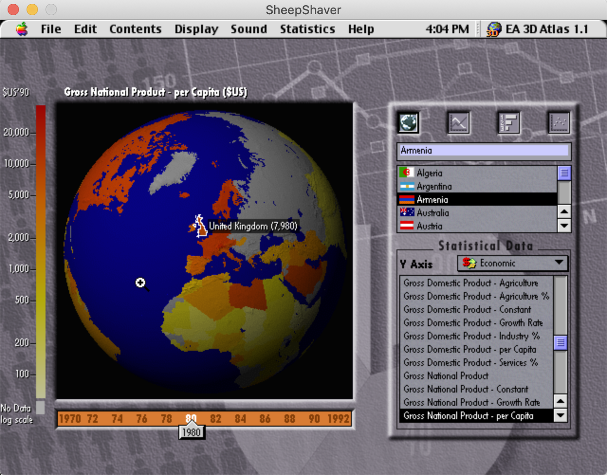

Worse than Videodiscs?
Terence Eden has written a post looking back on a claim by Jeremy Keith in 2011
11 years ago to the day, I was at a tech conference. It was 3 year after the iPhone had launched its app SDK. Those of us who had been in the mobile game a while had already spent years developing apps for Symbian, BlackBerry, Windows CE, and at least a dozen other OSes which I've since scrubbed from my memory.
But apps were the hip "new" thing, apparently. And there were a lot of people who were passionately invested in the idea the Steve Jobs™️ would save us all.
And, some of us, thought this was bunkum. With this memorable comparison being made:
11 years later, and I think Jeremy Keith (@adactio) was right..@adactio "writing an app is like coding for LaserDisc"@Aral: "that's not fair!"@adactio: "give it time"
— Terence Eden (@edent) September 5, 2011
*audience applauds*#update2011
Now, I am old enough to have coded for LaserDiscs - I worked at the BBC Interactive Television Unit that had built the Domesday Project, and later at the MultiMedia Corporation that it became after spinning out from the BBC. I built museum installations that used multiple lasrdisc players to provide widescreen interactive TV. I also worked on porting one of the BBC Laserdiscs to CD-ROM, and worked on CD-ROM native titles like 3D Atlas.
The thing is, the Domesday project, and CD-ROMs, because they were standalone, can still be run through emulation. There is a full emulation available:
Web pages are still available, and are archived by the Internet Archive as Terence says, but Videodics and CD-ROMs are too. You can download an ISO image of 3D Atlas 1.1, which I also worked on at MMC in 1993-4, and run it in an emulator.
 

They also have Android binaries too, which you may be able to run in emulation, if they're sufficiently standalone.
The standalone part is the rub - most iOS and Android apps are in effect specialised browsers that only work with a single site, and depend on server-side code to be running. A lot of websites do too, and the Internet Archive can't capture the server-side logic of these more complex sites, so they get added to the Site Deaths pile too.
Even sites where the server-side code is available can wind up undeployable as their dependencies vanish from npm or if they overbuilt using the React SPA worldview.
If you want longevity, you need to code with it in mind and have a statically servable fallback. Which isn't a contradiction of what Terence and Jeremy are saying, but taking on board Alex's advice too.
Upcoming conference talks have me once again thinking about the ways in which the frontend community has entirely lost the plot.
— Alex Russell (@slightlylate) September 6, 2022
Until and unless you have hard data of long sessions with many "fiddly" interactions, your content should *not* be an "SPA" or JS-first. https://t.co/H5FCYNpfo4
So Videodiscs aren't the worst things to archive, networks of servers running code that isn't available or archivable are, and we are building a lot more of those these days, whether on the web or in apps.